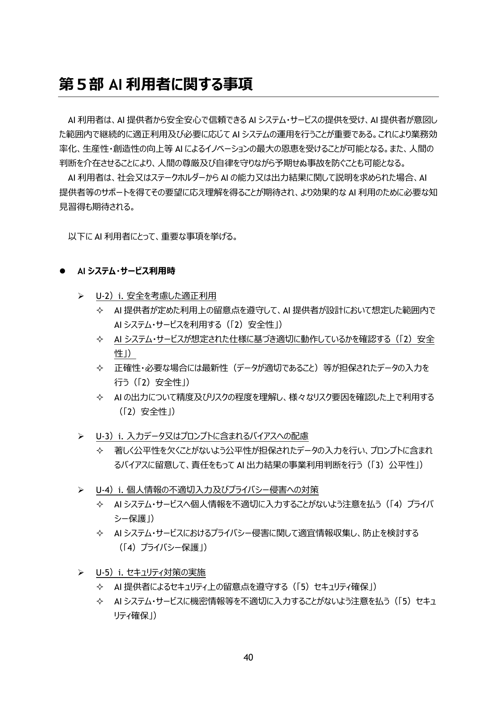
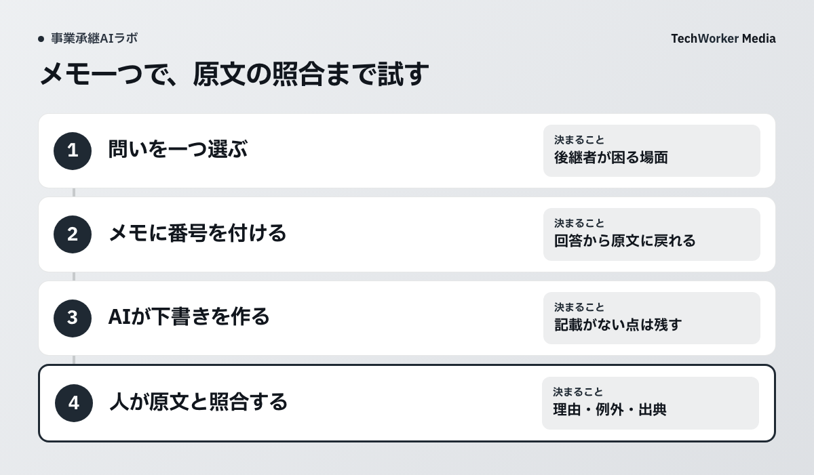
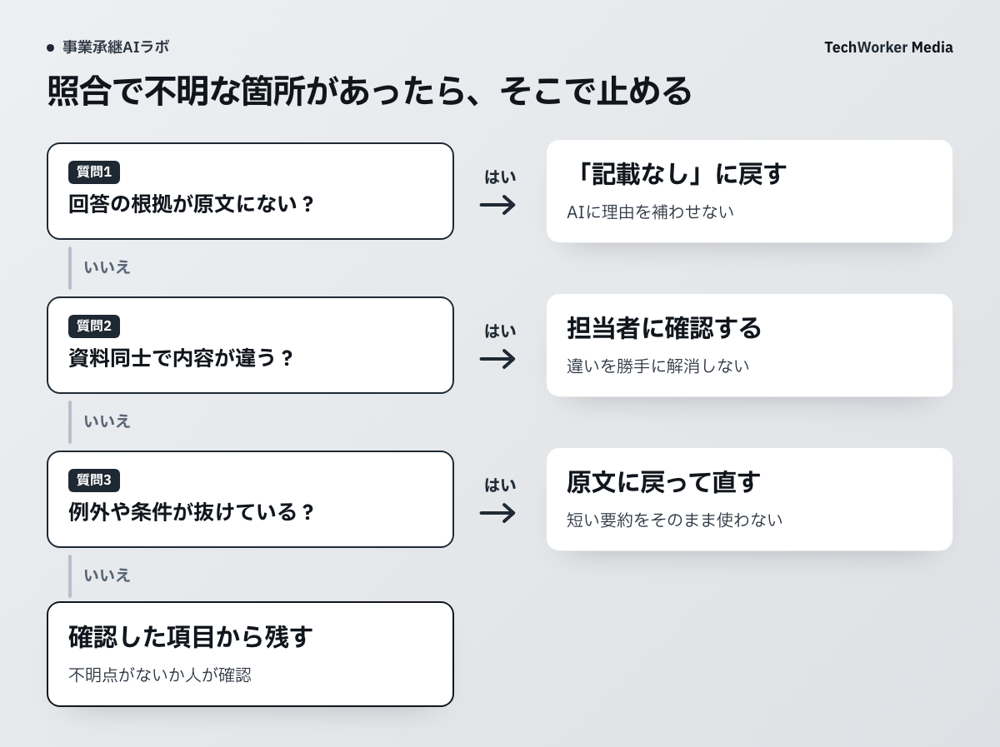

AI利用者にも確認責任がある
入力するデータと出力の精度・リスクを確認し、機密情報の不適切入力を避けます。

ガイドラインは、個別の承継メモが正確に整理されると保証するものではありません。記事では、AI利用者が確認するという原則を、資料番号、原文照合、未確認点の記録へ落とします。
後継者の問いを一つ選ぶ
資料を全部入れる前に、「納期変更の相談で最初に何を見るか」のような問いを一つ決めます。

問いに必要なメモだけを選び、誰が閲覧できるか、利用するサービスへ入力できるかを確認します。判断できない資料は使わず、架空メモで同じ手順を試します。
原文へ戻れる番号を付ける
資料名、確認日、段落番号を付け、AIの各記述から原文を開けるようにします。
- 入力資料に明記された内容だけを使う。
- 根拠となる資料名と段落番号を添える。
- 書かれていない情報は「記載なし」とする。
- 資料同士の違いは解消せず、確認事項として残す。
抜けた条件と矛盾を確認する
読みやすい要約ほど、例外、時点、対象者が落ちていないかを原文で見ます。

「この顧客だけ」「繁忙期を除く」「現担当者が在籍する間」のような条件が残っているかを確認します。資料にない理由が加わったら削除し、矛盾は資料を知る人へ戻します。試行の負担は、回答を得る時間だけでなく、資料の準備・修正・確認にかかった時間も含めて比べます。
試行用の指示文
以下の資料に明記された内容だけを使い、場面、確認した情報、判断、その理由、例外、未確認点を整理してください。各項目に資料名と段落番号を付けてください。資料にないことは「記載なし」とし、矛盾は解消せず列挙してください。最後に、人が原文と照合すべき箇所を示してください。
出典
資料確認日：2026年10月6日。本文の試行手順と指示文はTechWorkerの実践案です。